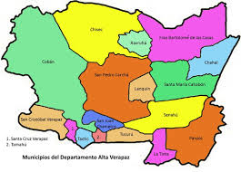
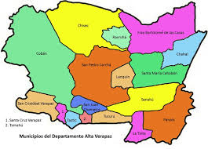

Departamento de Alta Verapaz
Alta Verapaz es uno de los 22 departamentos de Guatemala, ubicado en la región norte del país de Guatemala el departamento de Alta Verapaz es un tesoro de riqueza natural y cultural Con su cabecera en Cobán este departamento se distingue por sus impresionantes paisajes montañosos ríos cristalinos y una biodiversidad única.
Informacion de Alta Verapaz
Alta Verapaz se encuentra a aproximadamente 200 kilometros al norte de la Ciudad de Guatemala. Limita al norte con Petén, al este con Izabal, al sur con Zacapa, El Progreso y Baja Verapaz, y al oeste con El Quiché. Su cabecera departamental y su ciudad más poblada es Cobán.
 
